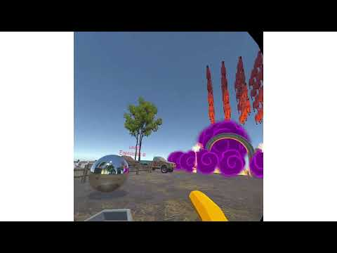

Hi, I'm Yu Chuan Chen.
I'm 陳又銓 (Leo). I hold a master's degree in Computer Science and Engineering from National Yang Ming Chiao Tung University (NYCU) and a bachelor's degree in Physics from National Tsing Hua University (NTHU).
My research explores human-computer interaction in virtual and mixed reality, with a focus on how avatar gaze and movement can make hybrid VR communication more expressive. Drawing on my physics background, I enjoy building interactive prototypes and turning abstract ideas into tangible experiences.
Education.
National Yang Ming Chiao Tung University (NYCU)
Institute of Computer Science and Engineering · Master's degree
–
National Tsing Hua University (NTHU)
Bachelor of Science in Physics
–
Publications.
- ACM MobileHCI 2026
AudioAvatar: Synthesizing Gaze through Inferring Conversational Context for Audio-Only Users in Avatar-Mediated Hybrid VR Communication
How can audio-only participants show who they are attending to in a VR conversation? AudioAvatar turns conversational audio into avatar gaze, combining speaker-following behavior with language-model-based contextual corrections. A 24-person study found improved social presence compared with static avatars.
- ACM PACMHCI 2026
Projects.
Indoor Weather
What if a windowless room could still offer a view of the weather? Indoor Weather brings a movable virtual window into mixed reality. Pinch gestures reposition the window, open it and operate the curtains, while gesture-based time controls let users explore forecast changes through weather transitions and indoor rain effects.
- Project

Sheep Invader
Can you stop the flock before it reaches the church? Sheep Invader reimagines Space Invaders as a sheep-themed shooting game. Clear all the sheep while avoiding their projectiles; the game ends if you are hit or the flock reaches the church. Two levels vary the number and color of the sheep.